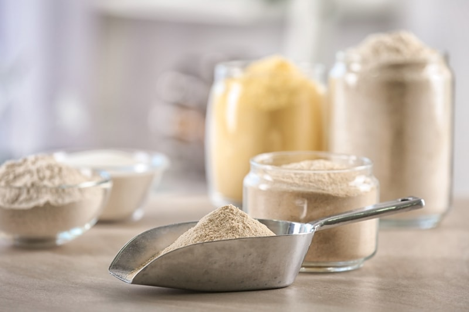
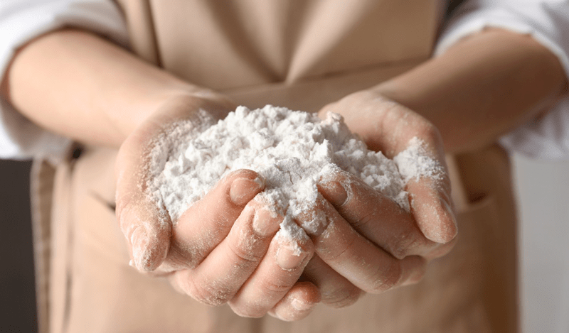
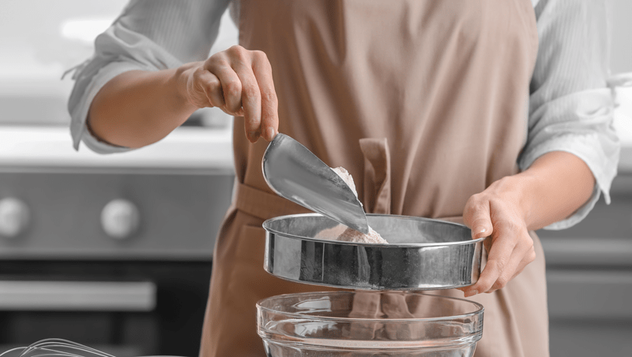
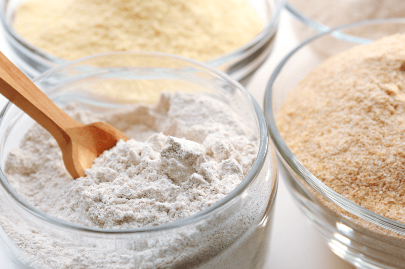
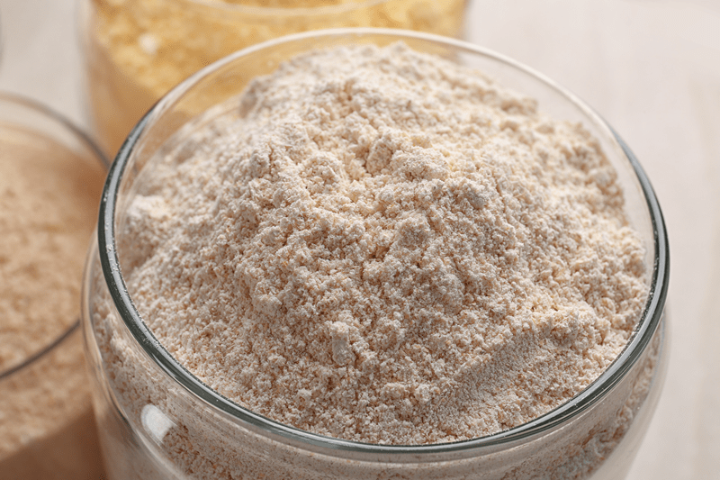
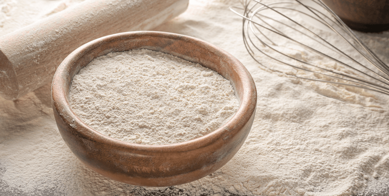

Flour Substitutions
Raw, gluten-free flours are all the rage. With so many dietary restrictions these days, wheat flour alternatives are at their all-time high. You can walk into just about any grocery store and find a wide variety of nut, seed, and grain-based flours. They won’t be raw, but they can still be a healthier choice. Below I will be sharing flour options (raw and processed) that you might commonly see being used in my recipes. Most forms of flour can be substituted for another, but there are a few exceptions. Below, I will go over the top choices that you will see used throughout my site.

Almond Flour
Almond flour comes in many forms and has several names. In the raw world, you will often see recipe writers refer to it as almond flour, almond meal, and ground almond flour. The main thing they all have in common is almonds; the texture is what separates them into different types of almond flour. It is important to understand what kind of flour the recipe creator used because they all have different properties.
Characteristics
- Almond flour is gluten and grain-free.
- Almond flour is very neutral in flavor. Some claim to pick up a hint of sweetness.
- Almond flour is great for both sweet and savory recipes.
- Interested in learning how almonds grow? Click (here).
Fine Almond Flour
- Fine almond flour (store bought) is not raw. It is cream colored and very fine.
- Fine almond flour can be made (keeping it raw) by grinding almond pulp into a fine flour. You can learn more about that (here). If you need a white almond flour for aesthetic purposes, it can be made with almond pulp (where the skins of the almonds are removed) that has been dried and ground to a fine flour. Click (here) to learn how.
Almond Meal & Ground Almond Flour
- Almond meal and ground almond flour are whole almonds that have been ground down into a small crumble. Due to the high-fat content in whole almonds, this technique WILL NOT achieve a fine flour texture.
- Almond meal will have brown flecks of color. If you wish for it to be lighter in color, you can soak the almonds, remove the skins, dehydrate them, and then grind them down to a small crumble. Learn how (here).
How to Use Almond Flour
- Almond flour (made from whole ground almonds) is perfect for raw crackers, breads, bars, crusts, etc. Check out my recipe for Cinn-Ful Apple Granola to see as an example.
- Fine almond flour is best to use in recipes that require a smooth texture or needs a creamy look for aesthetic purposes. An example of this is in my recipe for Sugar Cookies.
- If you want a white “flour” and plan on using whole almonds, do the following: soak, remove skins, dehydrate, and grind them down to as much of a fine texture as you can.
- Replace almond flour measure for measure, and you should have good results without necessarily compromising the integrity of the original recipe.
- You can usually combine a variety of flours as a substitution. Exchanges can alter recipes but that’s not always a bad thing, you will just be creating a different result than the recipe creator.
- Learn how to make it (here).
Almond Flour Substitutions

Buckwheat Flour
Buckwheat flour is a great alternative for those who are sensitive to nuts. They sell commercially made buckwheat flour in the stores but the kind that I am referring to here and within my recipes is a flour made from soaked, sprouted, dehydrated, and ground buckwheat. This process will assure you receive the most flavor and nutrition.
Characteristics
- Buckwheat flour is gluten, nut, and grain-free.
- Buckwheat flour can be made with sprouted, dehydrated buckwheat kernels. If you are new to sprouting, click (here) to learn why and how.
- Buckwheat flour has a unique nutty bitter hint to it.
- Buckwheat flour is heavier than other flours, making it denser. I personally like to cut it with other flours to balance out the flavor and texture.
- Buckwheat flour is great for both sweet and savory recipes. I feel it pairs best with strongly flavored ingredients, so it doesn’t overpower the result of the dish.
- Buckwheat flour is tan in color.
How to Use Buckwheat Flour
- You can use buckwheat flour in raw cracker, bread, cookie, crust, and bar recipes. Click (here) to see how I use buckwheat flour in a crust recipe. Or if a raw cookie delights your taste buds, click here to check out my Soft Brown Sugar Ginger Cookies.
- Buckwheat combined with other flour will offer a much milder flavor and lighter texture.
- Learn how to make it (here).
Buckwheat Flour Substitutions

Cashew Flour
Cashew flour can be found in stores, or you can make it from ground cashews. Store-bought options have a very fine texture whereas the kind made from ground cashews has small grainy bits in it. Just like almond flour (mentioned above), chefs may refer to it as cashew flour or cashew meal. In my recipes, I mainly use flour made from ground cashews and refer to it as cashew flour. If I use the finer, store-bought version, I will indicate it within the ingredient list.
Characteristics
- Cashew flour is gluten and grain-free.
- Cashew flour is neutral in flavor with a hint of sweetness.
- Cashew flour is great for both sweet and savory recipes.
- Cashew flour is cream/white in color, so it is great for recipes that have an all-around light color to them.
- Click (here) to learn how cashews are grown and harvested. It’s amazing!
Fine Cashew Flour
- This form of cashew flour is store-bought and is NOT raw. You can’t achieve a fine flour from whole cashews at home because of the high-fat content. If you try to grind down whole cashews to a fine texture, you will end up with cashew butter. That’s not a bad IF that is your goal.
Ground Cashew Flour
- Homemade cashew flour (cashew meal) is just cashews that have been ground down into small crumbles. This technique WILL NOT achieve a fine flour texture.
- To achieve the finest texture that you can get with whole cashews, grind them down, sift them through a mesh strainer, and regrind what doesn’t fall through. Repeat as many times as you can without turning it to a paste.
How to Use Cashew Flour
- Cashew flour (made from whole cashews) is perfect for raw crackers, cakes, breads, bars, crusts, etc. An example of this is in my Five Layer Petal Cake. In my Rosewater Sugar Cookies, I used a fine cashew flour.
- Replace cashew flour measure for measure with the flours listed below, and you should have good results without necessarily compromising the integrity of the original recipe.
- You can usually combine a variety of flours as a substitution, which can also help reduce the cost of nuts that are more expensive or hard to find.
- Exchanges can alter recipes but that’s not always a bad thing, you will just be creating a different result than the recipe creator.
Cashew Flour Substitutions

Coconut Flour
Coconut flour is a great alternative for those who have nut allergies, but there is a slight learning curve when it comes to using it. Store-bought coconut flour has a very fine texture which makes it a good option when you don’t want a grainy texture to your recipe. Coconut flour that is commercially-made LOVES to suck up moisture which can lead to a dry result. In my recipes, I typically use coconut flour that is made from unsweetened, dried coconut flakes. If I use the store-bought version, it will be indicated within the ingredient list in my recipes.
Characteristics
- Coconut nut flour is gluten, nut, and grain-free.
- Coconut flour is neutral in flavor with a hint of butter.
- Coconut flour is great for both sweet and savory recipes.
- Coconut flour is cream/white in color, so it is great for recipes that have an all-around light color to them.
Fine Coconut Flour
- Superfine coconut flour is store-bought and NOT raw.
- Superfine store-bought coconut flour is very drying. It sucks up moisture in recipes, so you need to be really careful when working with it.
- In my Cherry Coconut Thumbprint Cookie recipe, I used both types of coconut flour. Click (here) to see how I did that.
Ground Dried Coconut Flour
- Ground dried coconut flour is made from dried unsweetened coconut flakes. It isn’t super fine in texture, but you can get it pretty darn powdery. But just like nut or seeds, if you grind dried coconut down for too long, you will end up with coconut butter.
- Check out my recipe for Carrot Cake with Pumpkin Spiced Frosting to see how I used ground dried coconut flour.
How to Use Coconut Nut Flour
- If using super-fine coconut flour (store-bought) be sure to combine it with other flours to avoid your recipes from drying out.
- When following recipes, always contact the chef to verify what type of coconut flour they are using (if it isn’t clearly stated). If you use straight store-bought coconut flour and the chef used a coconut flour made from dried coconut flakes, your recipe will be less than satisfactory.
- You can use coconut flour in raw cracker, bread, cookie, crust, and bar recipes.
- Substitutions for coconut flour will depend on the type of coconut flour used and the recipe you are making. Put your thinking cap on before rushing into replacing it.
- Learn how to make (here and here).
Coconut Nut Flour Substitutions
Macadamia Nut Flour
You can purchase commercially-made macadamia nut flour, but I don’t use it in my recipes. If my recipes call for macadamia nut flour, it will be made from ground macadamia nuts. I don’t use them too often since they are super expensive, but good golly they are delicious!
Characteristics
- Macadamia nut flour/meal is just macadamia nuts that have been ground down into small crumbles. This technique WILL NOT achieve a fine flour texture. Due to the high oil content, you want to be careful that you don’t overprocess them. Otherwise, it will become more of a paste.
- Macadamia nut flour is gluten and grain-free.
- Macadamia nut flour is neutral in flavor with a hint of butter.
- Macadamia nut flour is great for both sweet and savory recipes.
- Macadamia nut flour is cream/white in color, so it is great for recipes that have an all-around light color to them.
- Since macadamia nuts are incredibly high in fat, you need to be careful that you don’t overprocess them in recipes. They can start to release too much of their own natural oils, thus creating an oil slick.
- I wrote a post on how they are grown and harvested (here). Learning where our food comes from is priceless.
How to Use Macadamia Nut Flour
- Replace macadamia nut flour measure for measure with the suggested flours below. By doing so, you should have good results without necessarily compromising the integrity of the original recipe.
- I like to combine another flour with macadamia nut flour to help keep the costs down.
- You can use macadamia nut flour in raw cracker, bread, cookie, crust, and bar recipes.
- Macadamia nut flour is also an excellent finishing flour, meaning it’s great to roll truffles or sweet ball treats in it.
- If you are interested in giving macadamia nut flour a try, check out my Blueberry Macadamia Nut Cookies!
Macadamia Nut Flour Substitutions

Oat Flour
In my recipes, I make my oat flour from gluten-free rolled oats. I soak, dehydrate, and grind it to a fine flour texture. A person can also make it from oat groats or from the pulp that is left over when making oat milk. You can purchase non-raw oat flour from the store. I find that it makes recipes more dense and heavier.
Characteristics
- Oat flour (that I use in my recipes) is simply rolled oats that have been ground down into a fine flour. To achieve the finest texture that you can get with rolled oats, grind it down, sift it, and whatever bits and pieces are left, regrind and shift.
- Oat flour is gluten and nut-free (always source the oats to avoid cross-contamination).
- Oat flour has an oaty flavor.
- Oat flour is great for both sweet and savory recipes.
- Learn more (here) on how oats grow and how they are harvested. One day I want to drive one of those machines!
- If you were wondering if oats can be raw or not, check out (this) post that I wrote. I hope it clears up any questions you may have.
How to Use Oat Flour
- Replace oat flour measure for measure, and you should have good results without necessarily compromising the integrity of the original recipe.
- I prefer to combine another flour with oat flour to create a more neutral flavor.
- You can use oat flour in raw cracker, bread, cookie, crust, and bar recipes. If you want to blow the socks off of your friends, learn how to make my Honey Oat Bread which uses oat flour.
- Learn how to make it from rolled oats or oat groats.
Oat Flour Substitutions
Sunflower Seed Flour (Aka Sunflour)
When I refer to sunflower seed flour in my recipes, I grind sunflower seeds to as much of a flour texture as possible. I haven’t seen a commercially-made one yet, but I am sure the day will come. It is best to make it from raw, soaked, and dehydrated seeds for optimal digestion and absorption of nutrients. I find sunflower seed flour to be strong in taste, so I don’t use it a lot in recipes, but it’s an option if you have nut allergies or a tight budget.
Characteristics
- Sunflower seed flour (that I use in my recipes) is sunflower seeds that have been ground down into flour. To achieve the finest texture that you can get with sunflower seeds, grind them down, push the “flour” through a sifter, and put the remaining large chunks back in the grinder, repeating the process until the texture you desire is reached.
- Sunflower seed flour is gluten, grain, and nut-free.
- It has a distinct flavor profile that can overwhelm a recipe.
- Sunflower seed flour is great for savory recipes. It’s not my go-to for sweet recipes, but it can be done — personal choice.
- Did you know that sunflowers track the sun? Click (here) to learn just how fascinating they are!
How to Use Sunflower Seed Flour
- Replace sunflower seed flour measure for measure with the options listed below, and by all means, feel free to use a combination of flours when using it.
- You can use sunflower seed flour in raw cracker, bread, cookie, crust, and bar recipes. If you are hungry for a raw savory snack, try my Sesame Sunflour Nori Crackers.
- Learn how to make it (here).
Sunflower Seed Flour Substitutions

Tigernut Flour
Tigernut flour is a great choice if you need to avoid nut, grain, and seed-based flours. On top of being nutrient-dense, it is also known for being one of the best dietary sources of resistant starch. Tigernut flour contains prebiotic fiber that behaves similarly to soluble fiber and helps regulate blood sugar levels. I don’t make my own; I purchase raw organic tigernut flour online. Since it is a very high resistant starch, it can cause digestive upset when introduced into the diet in large amounts. Therefore, I recommend cutting it with another flour until your body has adjusted to it.
Characteristics
- Tigernut flour is made from a tuber. Therefore, it is gluten-free, grain-free, nut-free, seed-free, and coconut-free.
- The tigernut flour (that I use in my recipes) is store-bought, and the texture is very fine.
- Tigernut flour has a sweet and nutty taste it. Some even find it sweet enough to help reduce the amount the sugar added to a recipe, that’s pretty darn cool if you ask me.
How to Use Tigernut Flour
- Replace tigernut flour measure for measure with the flours listed below (unless you are allergic to them).
- You can use tigernut flour in raw cracker, bread, cookie, crust, and bar recipes.
- Learn more about it (here).
Tigernut Flour Substitutions
© AmieSue.com